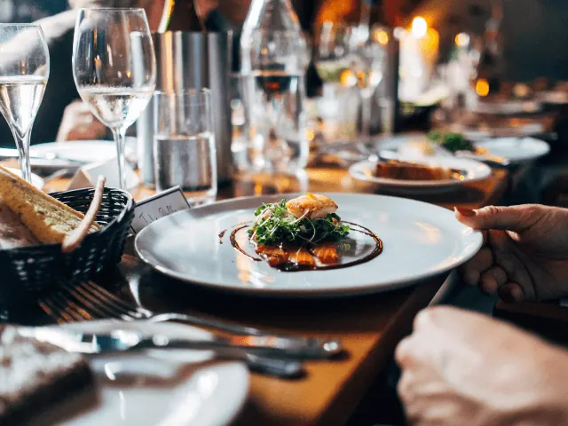
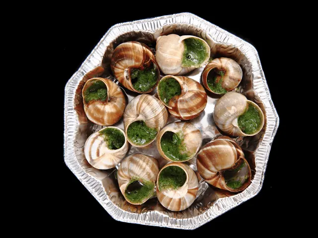
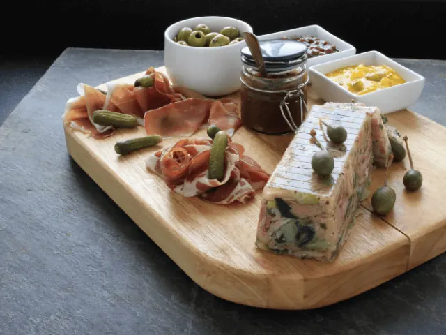

Ontdek de Franse Keuken in Nijmegen
Gepubliceerd op 15 februari 2023, bijgewerkt op 20 oktober 2023
Onderdeel van de gids Restaurants in Nijmegen
Bij de Franse keuken denken we vaak al gauw aan stokboord en croissants, en alhoewel deze lekkernijen absoluut een uniek onderdeel uitmaken van de Franse cultuur, is er nog zoveel meer te ontdekken! Van een romige croque-monsieur tot een zachte Franse uiensoep, in Frankrijk weten ze wel wat lekker eten is. Wil jij de Franse keuken ook verder ontdekken? Dan ben je waarschijnlijk op zoek naar het beste Franse restaurant in Nijmegen. Dat treft! Wij deden er recentelijk onderzoek naar.
Bistro de Bok in het centrum van Nijmegen en bistro La Belle Excuse in Nijmegen-Oost, zijn twee unieke plekken om de Franse keuken in je op te nemen. Hoogwaardige Franse streekproducten resulteren in de meest heerlijke gerechten. Ook restaurant NACIONAL biedt diverse Franse gerechten en heerlijke wijnen aan.
Twijfel jij nog of de Franse keuken wel aansluit bij jouw smaakpapillen? Dan raden wij je aan om de sprong gewoon te wagen. Wij weten namelijk zeker dat je niet teleurgesteld zult worden wanneer je in één van de onderstaande Franse restaurants in Nijmegen gaat eten. Laat je ons weten hoe het was?

Overzicht Franse restaurants in Nijmegen
Franse restaurants in Nijmegen – Dit zijn échte aanraders
Het ene restaurant is het andere niet. Het kan dan ook best lastig zijn om een keuze te maken. Waar kun je nu het beste terecht voor een échte Franse maaltijd? Wij nemen hieronder diverse restaurants onder de loep, en hopen jou hiermee inspiratie te geven voor jouw volgende etentje.
· Bistro de Bok
In het stadscentrum van Nijmegen vind je Bistro de Bok, een bistro met heerlijke Franse specialiteiten. Aangezien dit restaurant in hartje Nijmegen gevestigd is, vormt het de ideale plek om na een dagje cultuur opsnuiven heerlijk te genieten van de Franse keuken.
Het menu is uitgebreid en zeer divers. Van een Franse uiensoep als voorgerecht tot een heerlijke tournedos of zalmfilet als hoofdgerecht. Ook geniet je na met de lekkerste Franse desserts. Kies je voor een speciale koffie, een heerlijk ijsje of toch dat lekkere kaasplankje? De mogelijkheden zijn eindeloos.
Naast het heerlijke Franse eten van topniveau, is ook de sfeer in dit restaurant noemenswaardig. Sfeervol en zeer authentiek, dat zijn de termen die wij graag zouden gebruiken om dit restaurant te omschrijven. Ook het vriendelijke personeel laat niets te wensen over.
Ook een ruim assortiment aan heerlijke Franse wijnen ontbreekt niet bij Bistro de Bok. Dat wordt genieten!

· NACIONAL
Het tweede restaurant op onze lijst ligt aan het water, en biedt een prachtig uitzicht over de Waal. We hebben het over restaurant NACIONAL in Nijmegen. Het betreft een modern en zeer stijlvol restaurant, dat naast de Franse keuken ook de Italiaanse keuken vertegenwoordigd.
Bij NACIONAL hebben ze kwaliteit hoog in het vaandel staan. Daarom worden dagelijks de beste en allermooiste producten geselecteerd om hun gasten keer op keer te verrassen. Ook duurzaam inkopen staat bij de eigenaren van NACIONAL hoog op het lijstje. We kunnen dus wel spreken van een zeer verantwoorde keuze.
Gasten die bij restaurant NACIONAL hebben gegeten zijn zeer te spreken over de kwaliteit van de gerechten én de vriendelijkheid van het personeel. We zien dat mensen met grote regelmaat terugkeren naar deze plek om opnieuw te genieten van het heerlijke aanbod. Dat belooft dus wat.
Naast een uitgebreide menukaart, is er ook een breed wijnassortiment. Niet zeker welke wijn goed bij uw Franse gerecht past? Geen zorgen! U kunt vertrouwen op het vakkundige personeel van NACIONAL. Zij staan altijd klaar met een passend advies, om u zodoende een onvergetelijke avond te bezorgen.

· Parkzicht
Op een kleine tien minuten lopen van het oude stadscentrum van Nijmegen, vind je restaurant Parkzicht. Het betreft een sfeervol restaurant met een gezellige vibe. Combineer dit met een heerlijke maaltijd, en jij wilt hier nooit meer weg.
Bij Parkzicht werken ze bij voorkeur met pure ingrediënten. “Koken zonder poespas, enkel met pure ingrediënten en smaken”, dat is waar de keukenbrigade van Parkzicht om bekend staat. Of u nu kiest voor een Franse Coquilles of een Italiaanse Carpaccio, de menukaart van restaurant Parkzicht is van alle markten thuis.
Ben jij dus op zoek naar een restaurant met zowel de Franse als de Italiaanse keuken? Dan is Parkzicht the place to be. Op het verwarmde buitenterras kun je tijdens een zwoele zomeravond heerlijk tot in de late uurtjes zitten borrelen. Uiteraard onder het genot van een heerlijk Frans kaasplankje.

· La Belle Excuse
La Belle Excuse is een Franse bistro en wijn bar in Nijmegen-Oost. De eigenaar van deze bistro is een échte Fransman, die ons Nederlanders graag kennis laat maken met de unieke Franse keuken.
Het menu zit vol authentieke streekproducten en heerlijke gerechten uit de Franse keuken. Ook de Franse wijnen en kazen zijn sterk vertegenwoordigd. Naast heerlijke wijnen, kun je hier bovendien ook genieten van diverse huisgemaakte cocktails en likeuren.
De sfeer in La Belle Excuse is altijd fantastisch. Het is dan ook dé plek voor jou en je vrienden om samen de culinaire hoogstandjes van de Franse keuken te ontdekken. En aangezien je hier ook gezellig kunt borrelen, kunnen wij ons eigenlijk geen betere plek bedenken.